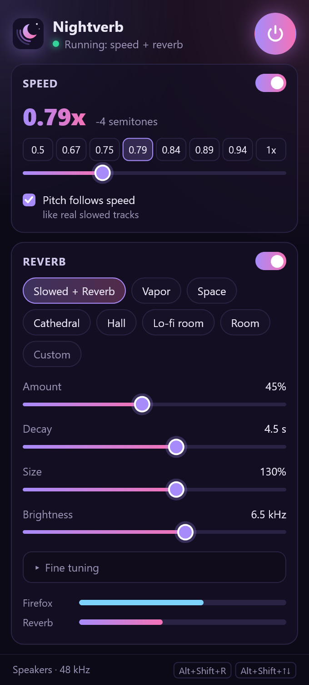
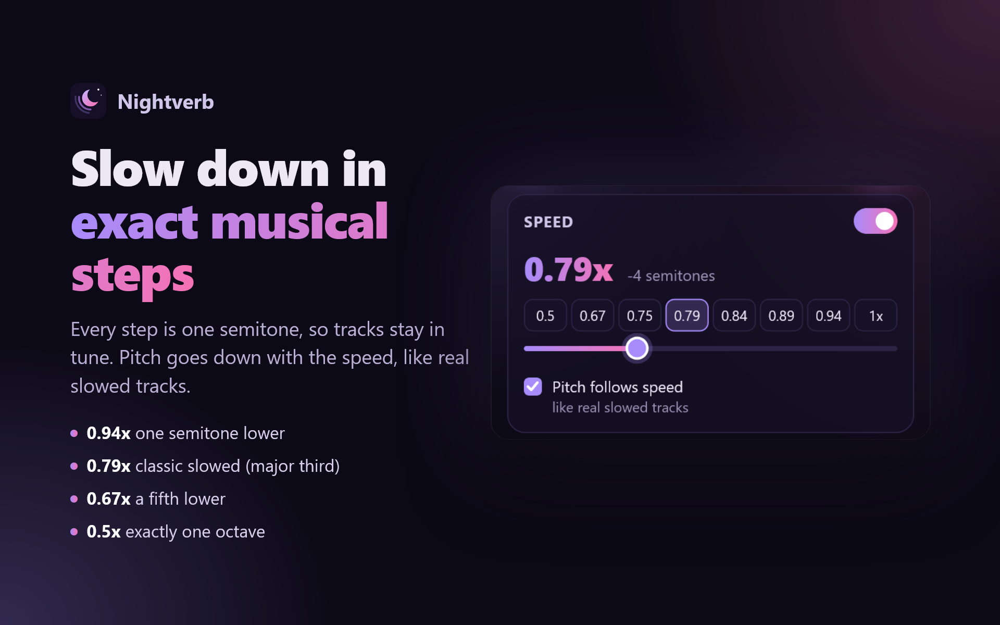
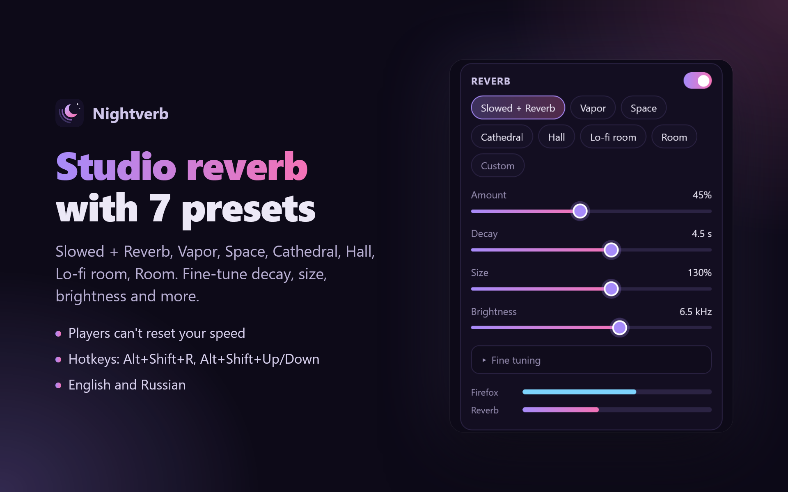

Slowed + reverb for any music in Firefox
Slow any track down in exact musical steps and add a lush studio reverb, in one click. YouTube, SoundCloud, Yandex Music, Spotify and most sites.
No account, no trial, no tracking. Open source (MIT).

Everything slowed + reverb needs
Built by someone who listens to slowed + reverb every day and got tired of paywalled extensions.
Exact musical steps
Every speed button is exactly one semitone lower, so tracks stay in tune. Pitch goes down with the speed, like real slowed tracks, or switch to tempo only.
Studio reverb
Seven presets (Slowed + Reverb, Vapor, Space, Cathedral, Hall, Lo-fi room, Room) and fine controls for decay, size, brightness and more.
Players can't reset it
Sites love to snap back to 1x on the next track. Nightverb keeps your speed across tracks, playlists and page changes.
- 0.94x one semitone
- 0.89x a whole tone
- 0.84x minor third
- 0.79x classic slowed
- 0.75x a fourth
- 0.67x a fifth
- 0.5x one octave
Works where you listen
- YouTube
- SoundCloud
- Yandex Music
- VK
- Spotify*
- and most other sites
* Spotify protects its audio, so no extension can touch it directly. On Windows, the free optional Nightverb audio component adds the reverb at the system level, without bypassing any protection. The popup offers it only on sites that need it.


FAQ
How do I make slowed + reverb music in my browser?
Install Nightverb for Firefox, play a track and click the Slowed + Reverb preset in the Nightverb popup. It slows the track to 0.79x (four semitones lower) and adds a studio reverb. You don't need to download the song.
Does it work on Spotify?
Spotify protects its audio, so no browser extension can process it directly. On Windows, Nightverb's free optional audio component adds the reverb at the system level; the popup offers it only on such sites. It doesn't bypass any protection.
Does it work on Yandex Music, YouTube and SoundCloud?
Yes. Slow-down and reverb work right away on YouTube, SoundCloud, VK, Yandex Music and most other sites, on any operating system.
Is it free?
Yes: no trial, no subscription, no account. It's open source under the MIT license.
Why 0.94x, 0.89x, 0.79x and not round numbers?
Each button is exactly one musical semitone lower (0.5x is one octave), so a slowed track stays in tune instead of landing between notes. 0.79x is four semitones down, the classic slowed sound.
Does it collect any data?
No. Audio is processed locally and never recorded or sent anywhere. Settings stay in your browser.
Chrome? Edge?
Nightverb is for Firefox for now. A Chrome and Edge version is on the list.